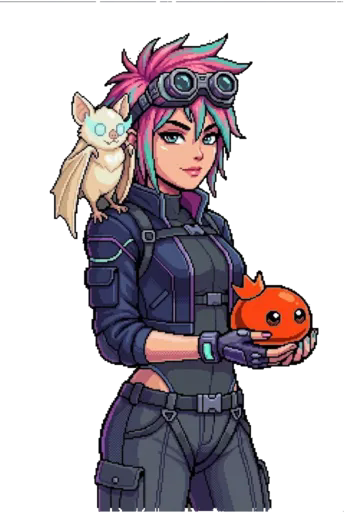

Welcome to the VIRUZ Field Desk — the player's codex for MalwareZ. I follow the signal, interview the strange things behind it, and turn every dangerous screen into a readable briefing.
“If the phone can see a database, a virtual world, or a hostile program, it can turn that signal into an opportunity.”— Nyx Vale, field journalist

This phone is your map, scanner, lab and raid console. It lets you scan hostile programs, raise a VIRUZ team, open virtual worlds and probe rival databases — all explained here for players, without the workshop notes.
Zone levels, safe spots, waves, rewards and enemy pools.
Attributes, species, habits, skills, loyalty and evolution.
Password terminals, steal choices, risk and the cost of failure.
Gear, crafting, cards, potions and the Tech Lab path.
Choose a team, understand attributes, socket a Habit card and follow each species' evolution line.
Open the hatchery →02 • choose a signalStart in the Verdant Realm, move through the Infernal Realm, then reach Galaxy and Tabletop territory.
Open the map desk →03 • know the threatRead enemy habits, regional threats, security guards and the bosses that protect rare materials.
Open the scanner →04 • tune the phoneSpend resources on gear, skills, cards and the Tech Lab — the choices that make a run safer.
Open the lab report →05 • stay aliveLearn the automatic battle rhythm, ailments, raid odds, loyalty and the fastest ways to look after a VIRUZ.
Open the survival desk →Your first advantage is not a rare drop — it is knowing what the phone is telling you. Keep a balanced supply of healing items, build around a team attribute when you can, and read the raid odds before you commit. A safe zone is not a detour: it is where a careful hacker resets, repairs and prepares the next signal.